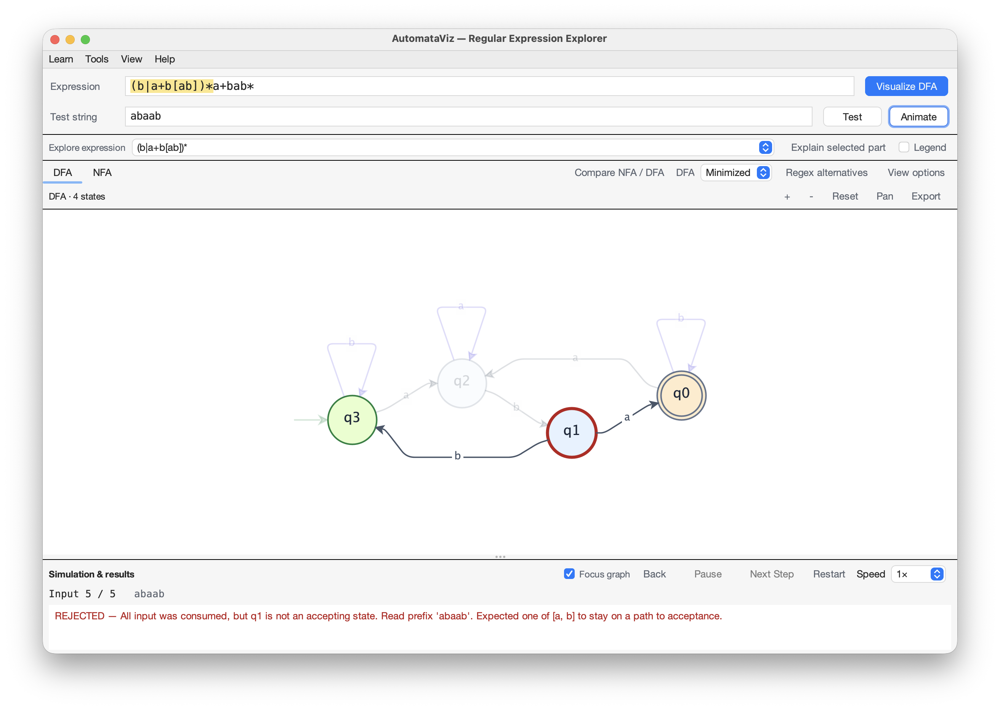
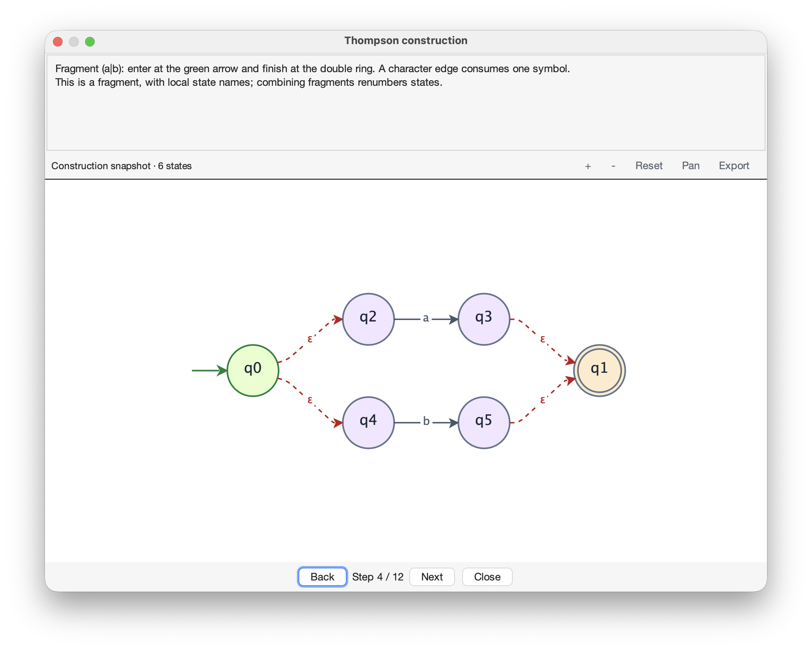

Understand the states
behind an expression.
AutomataViz is a free desktop learning tool for Theory of Computation, covering regular expressions and finite automata.
Construct a machine, trace an input, and inspect how an ε-NFA becomes a DFA and a minimized DFA.
Download the appSee how the walkthrough works
Java 11 or newer. Available for macOS, Windows, and Linux.

Screenshots from the macOS application.
Explore automata theory
Connect the expression you write with the states that recognize it. Each conversion preserves the accepted language.
Regular expression
Describe a language with symbols, alternatives, and repetition.
ε-NFA
See how Thompson’s construction connects the parts of an expression.
DFA
Inspect the set of NFA states represented by each deterministic state.
Minimized DFA
Find equivalent states and understand why they can be merged.
Edit transitions, pan and zoom through larger graphs, and see the corresponding expression change as you reconnect the machine.
Watch an input move through the graph
Enter a test string and select Animate. A moving marker follows each transition while the active state, input position, and explanation update together.

Control the pace
- Pause and resume
- Stop at a transition to inspect it, then continue automatic playback.
- Back and Next Step
- Revisit an earlier state or advance one input symbol at a time.
- Restart and speed
- Replay from the start, or slow the animation down to inspect a transition.
- Focus graph
- Fade unrelated transitions to follow the current state. Turn it off to keep the complete graph visible.


Understand the result, not just the path
Reaching a double-ring state is only enough when the entire input has been consumed. Playback explains acceptance or rejection, including missing transitions, symbols outside the alphabet, and paths into dead states.
In the rejection screenshot, abaab finishes in q1, a non-accepting state. All five symbols were read, but the string is rejected.
Learning activities
Build the explanation as you go. Replay Thompson fragments, follow subset discovery, and inspect the partitions used to minimize the DFA. Then trace an input through the resulting machine.
Open the construction screenshot ↗
Then follow the construction
Choose Construction steps in a learning stage. Back and Next replay the algorithm’s recorded decisions, with read-only graph snapshots.
Try ε-closure next
Use a(b|c)* with input ab. In the ε-NFA stage, compare a symbol move with ε-closure. Which step consumes input? Then inspect the NFA states grouped into each DFA state.

(a|b): the alternation introduces two branches connected by ε-edges.The new entry can choose either branch without consuming input. Both exits join at the accepting state. Back and Next revisit these recorded decisions.
Compare equivalent expressions
Graph edits can produce a long regex. Compare “Shortest found” with “Easiest to read,” then copy or use the expression you prefer.

Checked against the graph
Each alternative shows its character count and is checked against the graph for exact language equivalence.
The search does not guarantee the globally shortest regex. Readability is evaluated with a heuristic.
View the alternatives screenshot ↗Start with a question
What does a machine need to remember? Open Examples in the app to load a learning goal, an expression, and inputs to test.
| Learning goal | Expression | Accepted | Rejected |
|---|---|---|---|
| Recognize a suffix | (a|b)*abb | aabb | abba |
| Track an even number of a’s | b*(ab*ab*)* | abba | abaa |
| Repeat a whole group | (ab|ac)* | abac | abc |
| Read binary multiples of three | (0|1(01*0)*1)+ | 1001 | 1010 |
The app also includes comparisons of equivalent expressions, overlapping patterns, identifiers, and a simplified email pattern.
Download and install
Run AutomataViz on your computer with a desktop Java 11 or newer runtime.
Download development buildChoose this development build to try the features shown here. For classroom use or a fixed version you can share, choose a published release; older releases may have fewer features.
Run the application
- Check Java in a terminal with
java -version. Use version 11 or newer. - If Java is missing or older, install Eclipse Temurin for your operating system, then reopen the terminal.
- Download the JAR and open a terminal in its folder. Run:
java -jar AutomataViz.jarHaving trouble launching?
Java not found: install Java, reopen the terminal, and run java -version again.
Unable to access jarfile: check that the terminal is in the download folder and the filename matches the command. Published releases use a versioned JAR name.
If it still fails, report the error with your operating system, Java version, and the terminal message.
Verify the download
SHA-256
4e9c5962136b5ffb62087c6ac3974f09df676889bb5f2ebbdfec59f81b8bb06fBuild from source
Clone the repository and run mvn clean package. Maven is required to build the source.
Supported expression syntax
Use literals, |, *, +, ?, parentheses, character classes, and escaped punctuation. Shorthand classes such as \d, anchors, and counted repetitions are not supported.